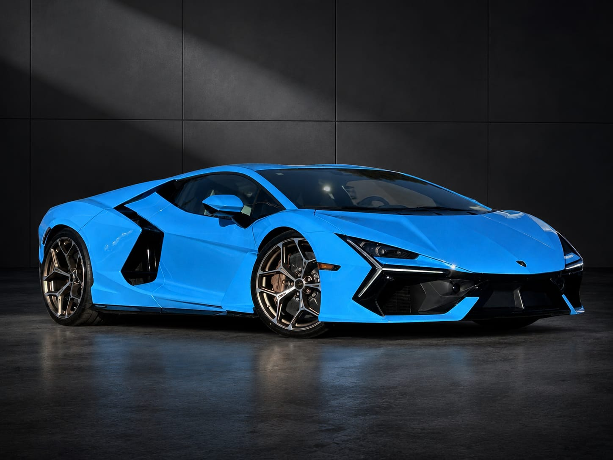

Top 5 autos del 2026
18 mayo 2026 | 12:00 PM

La industria automotriz continúa evolucionando a una velocidad impresionante. Entre tecnología híbrida, diseños futuristas y niveles de potencia nunca antes vistos, el 2026 promete convertirse en uno de los años más emocionantes para los amantes de los autos.
Estas son algunas de las máquinas que están marcando tendencia y captando la atención del mundo automotriz este año.
1. Ferrari F80

Ferrari sorprendió al mundo con el nuevo F80, un superdeportivo híbrido inspirado directamente en la Fórmula 1. Su diseño agresivo y tecnología avanzada lo convierten en uno de los vehículos más deseados del año.
El modelo combina velocidad extrema con aerodinámica futurista, manteniendo el ADN clásico de la marca italiana.
2. Lamborghini Revuelto

Lamborghini continúa apostando por motores híbridos de alto rendimiento con el Revuelto, un vehículo que mezcla brutalidad, lujo y diseño radical.
Su presencia en carretera y sonido continúan representando la esencia más salvaje de la marca.
3. Porsche 911 GT3 RS 2026

El nuevo GT3 RS sigue demostrando por qué Porsche domina el equilibrio entre circuito y conducción diaria.
Con mejoras aerodinámicas y una experiencia de manejo extremadamente precisa, sigue siendo uno de los deportivos más admirados del planeta.
4. Mercedes-AMG One

Inspirado directamente en la Fórmula 1, el AMG One lleva tecnología de competición a las calles con un nivel de ingeniería pocas veces visto en un automóvil de producción.
Su diseño futurista y potencia híbrida lo convierten en uno de los proyectos más ambiciosos de Mercedes-Benz.
5. Nissan GT-R R36

El esperado GT-R R36 representa la evolución moderna de una de las leyendas japonesas más importantes de la historia.
Aunque mantiene la esencia agresiva del “Godzilla”, incorpora nuevas tecnologías y un enfoque más moderno para competir en una nueva generación de superdeportivos.
El futuro del automovilismo
El 2026 demuestra que la industria automotriz vive una transformación histórica donde la tecnología híbrida, la electrificación y la innovación están redefiniendo el concepto de velocidad.
Sin embargo, algo continúa intacto: la pasión que millones de personas sienten por los automóviles más extraordinarios del mundo.